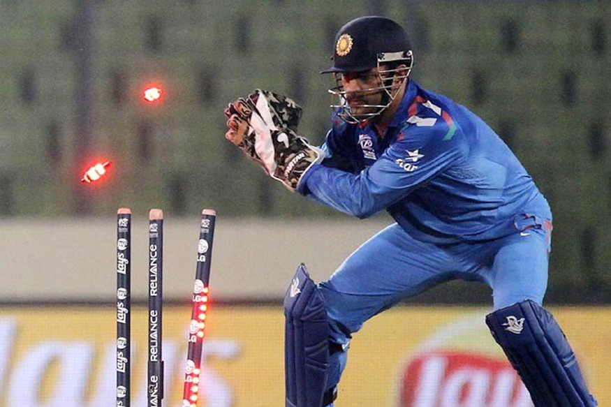

Wicketkeeper

- Wicketkeeper
- The wicket-keeper in the sport of cricket is the player on the fielding side who stands behind the wicket or stumps being watchful of the batsman and ready to take a catch, stump the batsman out and run out a batsman when occasion arises. The wicket-keeper is the only member of the fielding side permitted to wear gloves and external leg guards. The role of the keeper is governed by Law 27 of the Laws of Cricket.
MS Dhoni
- Career:2004-2019
- Matches:350
- Dismissals:444